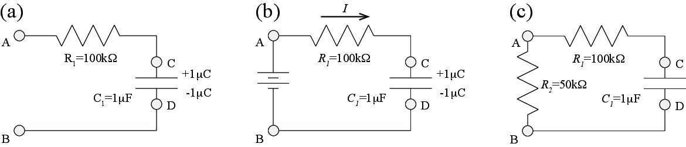
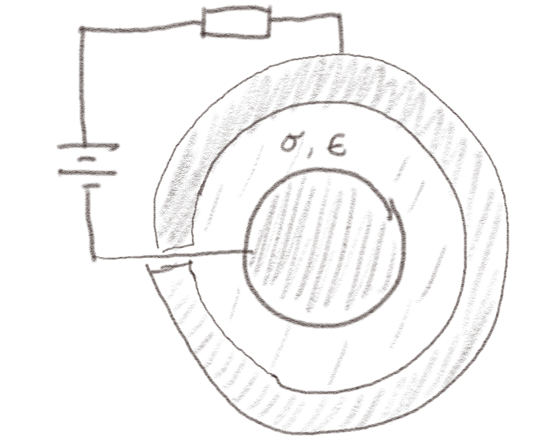
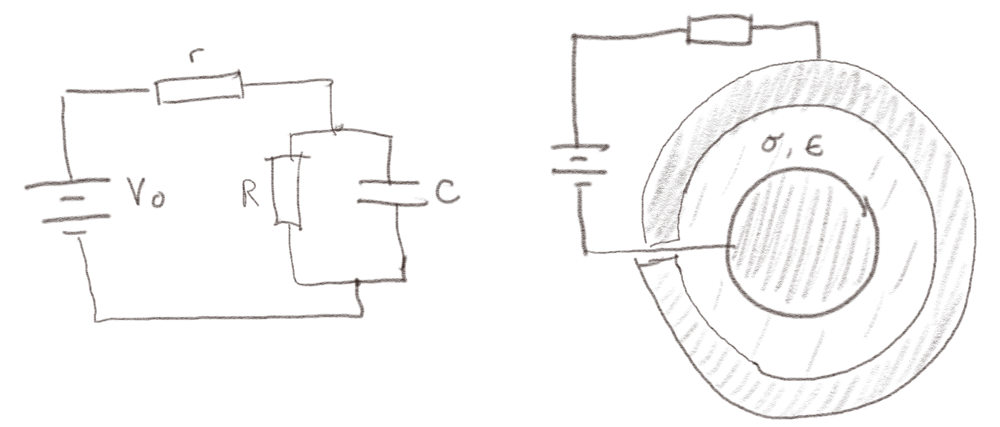
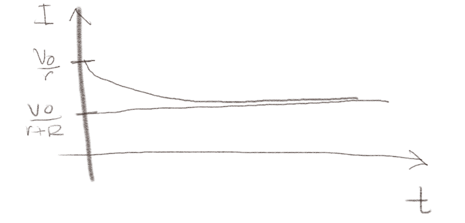
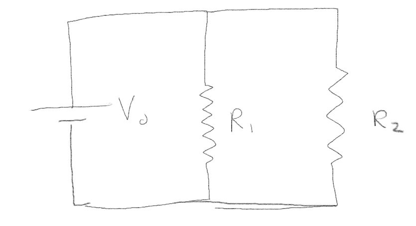
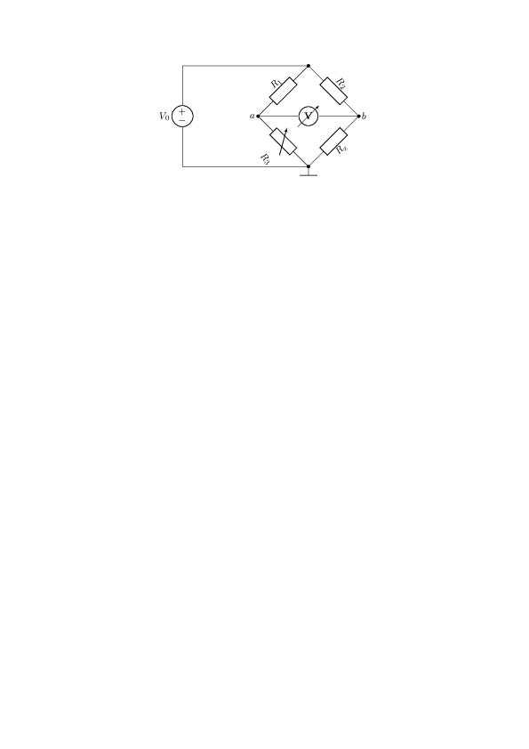
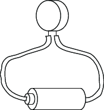

Er strømmen på hver side av en plate-kondensator alltid den samme? Forklar hvorfor eller hvorfor ikke.
Et lyn slår ned i toppen av et grantre. Hvordan vil du modellere systemet som en krets hvis du er interessert i hvordan strømmen går gjennom luften og treet?
(Based on a tutorial from University of Wisconsin - Madison)
In this tutorial we will address resistors and capacitors in a circuit.
The capacitor \( C_1 \) has a charge of \( 1 \, \mu\text{C} \) with the sign as indicated in Fig. 5a.
Figure 5: Illustration of the RC circuit.

a) What is the potential difference \( V_C - V_D \)? (The circuit is as drawn, with A and B the ends of the wires, not connected to anything else).
The potential difference is found from \( \Delta V = Q/C = 1 \mu \text{C} / 1 \mu \text{F} = 1 \text{V} \).
b) What is the potential difference \( V_A - V_B \)? (The circuit is as drawn, with A and B the ends of the wires, not connected to anything else).
The potential difference must be the same as for \( V_C - V_D \). When there is no current, there is no potetial drop across the resistance, hence the potential in \( A \) and \( C \) must be the same and the potential in \( B \) and \( D \) is the same.
c) Now a 9V battery is connected to the circuit, the + terminal to A and the – terminal to B. What is the current through \( R_1 \) immediately after connecting the battery? (Current flowing toward the capacitor (from A to C) is defined to be positive).
Kirchoff's law for potentials around the circuit gives that: $$ \begin{equation} V_0 - R_1 I - \Delta V = 0 \; , \tag{7.1} \end{equation} $$ where \( V_0 \) is the emf of the battery and \( \Delta V \) is the voltage drop across the capacitor. We insert the values and find that $$ \begin{equation} V_0 - \Delta V = 9 \text{V} - 1 \text{V} = 8 \text{V} = I R_1 \; \Rightarrow \; I = 8 \text{V}/(100 \text{k} \Omega) = 8 V/(10^5 \Omega) = 8 \times 10^{-5} \text{A} = 80 \mu \text{A} \; . \tag{7.2} \end{equation} $$
d) After a very long time, with the battery still connected, what is the total amount of charge that has flowed from the battery through \( R_1 \)?
After a long time, when the current is zero, Kirchoff's law for potentials around the circuit gives that: $$ \begin{equation} V_0 - \Delta V = 0 \, \Rightarrow \, \Delta V = V_0 \; , \tag{7.3} \end{equation} $$ where \( I = 0 \) and hence the potential drop over \( R_1 \) is \( I R_1 = 0 \). We find the charge from \( Q = CV \), giving $$ \begin{equation} Q = C V = 1 \mu \text{F} \, 9 \text{V} = 9 \mu \text{C} \; . \tag{7.4} \end{equation} $$ Since we started with \( Q_0 = 1 \mu \text{C} \), we see that the amount of charge that has flowed through \( R_1 \) must be \( 8 \mu \text{C} \).
e) After this very long time, the battery is disconnected, with terminals A and B open again. How much energy is stored in the capacitor?
A resistor \( R_2 = 50 \text{k}\Omega \) is then connected between A and B as shown in Fig. 5c.
f) Immediately after connecting \( R_2 \), what is the current flowing through \( R_1 \)?
We apply Kirchoff's law for potentials in this case, in the opposite direction as before (counter-clockwise). In this case, the potential increases across the capacitor and drops over each of the resistors: $$ \begin{equation} \Delta V - I R_1 - I R_2 = \Delta V - I (R_1 + R_2) = 0 \, \Rightarrow \, I = \frac{\Delta V}{R_1 + R_2} = \frac{9 \text{V}}{150 \text{k} \Omega} = 60 \mu \text{A} \; . \tag{7.5} \end{equation} $$
g) Will this current increase, decrease, or stay the same as time goes on?
The current will decrease. The current will reduce the charge across the capacitor, which will reduce the potential difference across the capacitor, which in turn will reduce the current. The current will approach zero as time approaches infinity.
A conducting sphere consists of an inner conducting sphere of radius \( a \), and outer spherical shell with inner diameter \( b \). (You may think of this as a simple model for a In the region between \( a \) and \( b \), the material has a dieletric constant \( \epsilon \) and a conductivity \( \sigma \). A battery with a constant voltage difference \( V_0 \) is connected to the inner sphere and outer shell with a wire with resistance \( r \).
a) Make a drawing of the system.

b) What is the resistance \( R \) of the sphere? (You may look up the result.)
We have found this to be \( R = 1/(4 \pi \sigma) (1/a - 1/b) \)
c) What is the capacitance \( C \) of the sphere? (You may look up the result.)
We have found this to be \( C = 4 \pi \epsilon /(1/a - 1/b) \).
d) Make a circuit model of the system. What components do you need? Should you add the components in series or in parallel --- provide an argument for you choice.
Some current will leak through the conducting part of the there sphere, so the sphere will act both as a resistor and as a capacitor. The inner sphere is the inner side of both the resistance and the capacitance of the system. They will therefore have the same potential, which means that they are connected in parallel.

Now, we have created a circuit model of the system. Let us argue qualitative how this model will behave.
e) What is the current \( I \) through the battery immediately after you connect it?
Immediately after we connect the battery there will be no charge on the capacitor so that the voltage drop across the capacitor is zero. All the current will therefore flow into the capacitor, which has zero resistance. The current will therefore flow through the battery, through the resistor \( r \) and through the capacitor that has zero potential drop. Kirchoff's voltage law gives us \( V_0 - I r - 0 = 0 \) and \( I = V/r \).
f) What is the current \( I \) through the battery after a very long time?
After a very long time the capacitor will be fully charged and there will be no more current flowing into the capacitor. All the current will therefore flow through the resistor \( R \). Kirchoff's voltage law for a circuit through the battery, resistor \( r \) and resistor \( R \) gives \( V_0 - I r - I R = 0 \) and \( I = V_0/(r + R) \).
g) Sketch the time development of the current if you connect the battery to the system at \( t = 0 \).
We expect it to fall off from \( V_0/r \) to \( V_0/(r + R) \) with an exponential time dependence as illustrated in the figure.

We can also find the equations for this circuit and solve them. We introduce \( I \) as the current through the battery, \( I_R \) as the current through the resistance \( R \) and \( I_C = \d Q_C/\d t \) as the current through the capacitor.
h) How can you use Kirchoffs current law in this circuit?
We use Kirchoff's current law on the junction into the the \( R \) and \( C \) parts of the circuit, where \( -I + I_R + I_C = 0 \) or \( I = I_R+I_C \).
i) Use Kirchoff's voltage law on a circuit through the resistor \( R \) and the capacitor \( C \). Show that if you combine this with Kirchoff's current law you get: $$ \begin{equation} R\frac{\d I_R}{\d t} = \frac{1}{C}\left( I - I_R \right) \; . \tag{7.6} \end{equation} $$
Kirchoff's voltage law on a circuit through the resistor \( R \) and the capacitor \( C \). This gives us: \( I_R R - V_C = 0 \), where \( V_C = Q_C/C \), so that \( I_R R = Q_C/C \). We take the time derivative on both sides to find \( I_C \): $$ \begin{equation} \frac{\d I_R}{\d t}R = \frac{1}{C}\frac{\d Q_C}{\d t} = \frac{1}{C} I_C \; . \tag{7.7} \end{equation} $$ We insert that \( I_C = I - I_R \), getting: $$ \begin{equation} \frac{\d I_R}{\d t}R = \frac{1}{C} \left( I - I_R \right) \; . \tag{7.8} \end{equation} $$
j) Now use Kirchoff's voltage law for a path through the battery and both resistors to show that the differential equation for \( I_R \) is $$ \begin{equation} RC\frac{\d I_R}{\d t} = \frac{V_0}{r} - \left( 1 + \frac{R}{r} \right) I_R \; . \tag{7.9} \end{equation} $$
Kirchoff's voltage law for a part through the battery and both resistors gives: \( V_0 - I r - I_R R = 0 \), which gives that $$ \begin{equation} I = \frac{V_0 - I_R R}{r} \; . \tag{7.10} \end{equation} $$
k) Show that you can combine the two equations from the last to exercises to find an equation for \( I_R \): $$ \begin{equation} RC\frac{\d I_R}{\d t} = \frac{V_0}{r} - \left( 1 + \frac{R}{r} \right) I_R \tag{7.11} \end{equation} $$
We insert $$ \begin{equation} I = \frac{V_0 - I_R R}{r} \; . \tag{7.12} \end{equation} $$ into $$ \begin{equation} \frac{\d I_R}{\d t}R = \frac{1}{C} \left( I - I_R \right) \; . \tag{7.13} \end{equation} $$ getting $$ \begin{equation} RC\frac{\d I_R}{\d t} = \frac{V_0}{r} - I_R \frac{R}{r} - I_R = \frac{V_0}{r} - \left( 1 + \frac{R}{r} \right) I_R \; . \tag{7.14} \end{equation} $$
l) We will not solve this equation here, but you can check that you get the expected limit in when \( t \rightarrow \infty \).
In the limit when \( t \rightarrow \infty \) we expect \( \d I_R / \d t= 0 \) and $$ \begin{equation} I_R = \frac{\frac{V_0}{r}}{ 1 + \frac{R}{r}} = \frac{V_}{r + R} \; , \tag{7.15} \end{equation} $$ where we also realize that in this limit there is no current through the capacitor so that \( I = I_R \). This corresponds to what we found above.
Fig. 6 illustrates a simple circuit driven by a battery with emf \( V_0 \), and consisting of two resistors \( R_1 \) and \( R_2 \).
Figure 6: Illustration of a simple circuit. .

a) Find the current \( I \) through the battery expressed in terms of \( V_0 \), \( R_1 \) and \( R_2 \).
\( I = \frac{R_1+R_2}{R_1R_2}V_0 \).
The simplest way to solve this problem, is to compute the equivalent resistance and then plug it into Ohm's law. We've got a parallel circuit on our hands, so the equivalent resistance is given by $$ \begin{equation} R = \left(\frac{1}{R_1} + \frac{1}{R_2}\right)^{-1} = \left(\frac{R_1 + R_2}{R_1R_2}\right)^{-1} = \frac{R_1R_2}{R_1+R_2}. \tag{7.16} \end{equation} $$ Ohm's law then yield $$ \begin{equation} I = \frac{V_0}{R} = \frac{R_1+R_2}{R_1R_2}V_0, \tag{7.17} \end{equation} $$ which is what we set out to find.
b) What is the power develivered by the battery?
\( P = \frac{R_1+R_2}{R_1 R_2}V_0^2 \).
The power of the current is given by the usual formula \( P = VI \), so in our case the power delivered by the battery is $$ \begin{equation} P = V_0I = \frac{R_1+R_2}{R_1 R_2}V_0^2. \tag{7.18} \end{equation} $$
Fig. 7 illustrates a Wheatstone bridge, which is used to measure resistance. In the circuit, \( R_3 \) is variable resistance, \( R_x \) is the unknow resistance, and \( R_1 \) and \( R_2 \) are given, known resistances. The voltmeter has infinite resistance.
Figure 7: Illustration of a Wheatstone bridge. .

a) Find the voltage difference \( V_a - V_b \) which is read from the voltmeter expressed in terms of the four resistances.
\( V_a-V_b = \left(\frac{R_1}{R_1+R_3} - \frac{R_2}{R_2+R_x}\right)V_s = \frac{R_1R_x - R_2R_3}{(R_1+R_3)(R_2+R_x)}V_s. \)
Let's denote the first node in the wheatstone bridge as \( c \) (that is, the node where the current enters the parallel part of the circuit). Let \( V_G \equiv V_a - V_b \). We assume that the resistance of the voltmeter is infinite such that no current flows through it. Since it's a parallel circuit, the voltage across \( R_1 \) and \( R_3 \) is the same as the voltage across \( R_2 \) and \( R_x \). Since \( R_1 \) and \( R_3 \) are connected in series, the same current flows through both resistors, which we'll denote as \( I_{1,3} \). The same goes for the current through \( R_2 \) and \( R_x \) which will be denoted \( I_{2,x} \).
First we need the currents flowing through the parallel circuit. These are obtained through Ohm's law: $$ \begin{equation} I_{1,3} = \frac{V_s}{R_1+R_3} \; , \qquad \text{and} \qquad I_{2,x} = \frac{V_s}{R_2+R_x} \; , \tag{7.19} \end{equation} $$ Now, the voltage difference across \( R_1 \) is $$ \begin{equation} V_a - V_c = R_1 I_{1,3} = \frac{R_1}{R_1+R_3}V_s \; . \tag{7.20} \end{equation} $$ Similarly, the voltage difference across \( R_2 \) is given by $$ \begin{equation} V_b - V_c = R_2 I_{2,x} = \frac{R_2}{R_2+R_x}V_s \; . \tag{7.21} \end{equation} $$ Now we can obtain \( V_G \) by the following manipulation: $$ \begin{align} V_G & = & V_a-V_b = (V_a - V_c) - (V_b-V_c) \tag{7.22}\\ & = & \left(\frac{R_1}{R_1+R_3} - \frac{R_2}{R_2+R_x}\right)V_s = \frac{R_1R_x - R_2R_3}{(R_1+R_3)(R_2+R_x)}V_s \; . \tag{7.23} \end{align} $$
b) The variable resistance \( R_3 \) is adjusted until the measured voltage is zero. Find the unknown resistance \( R_x \) from the other resistances.
\( R_x = \frac{R_2R_3}{R_1} \)
Since \( R_3 \) is adjusted until \( V_G = V_a-V_b = 0 \), we get the equation $$ \begin{equation} V_G = \frac{R_1R_x - R_2R_3}{(R_1+R_3)(R_2+R_x)}V_s = 0 \; , \tag{7.24} \end{equation} $$ which is only zero if \( R_1R_x - R_2R_3 = 0 \), meaning $$ \begin{equation} R_x = \frac{R_2R_3}{R_1} \; . \tag{7.25} \end{equation} $$
In this problem we will develop a simple model for dielectric breakdown in a circuit. You may think of the system as a model for a lightning forming between clouds, or you may think of the model as an example of dielectric breakdown in a capacitor.
We start from the system illustrated in Fig. 8a consisting of a battery with emf \( V_0 \), a capacitor \( C \) and a resistor \( R_0 \).
Figure 8: Illustration of the RC circuit.
a) The circuit is open and has been open for a long time. Then at \( t = 0 \) the circuit becomes closed. What is the charge \( Q(0) \) on the capacitor and the potential fall \( V(0) \) over the capacitor immediately after the circuit is closed (at \( t=0 \))?
\( Q(0) = 0 \), \( V(0) = 0 \).
Immediately before the circuit is closed \( Q=0 \). Immediately after the circuit is closed, the charge is the same. The potential drop over the capacitor is then \( V = Q/C = 0 \).
b) What is the potential fall \( V \) over the capacitor and the charge \( Q \) on the capacitor when there is no current flowing in the circuit? (A very long time after the battery has been connected to the circuit).
\( V = V_0 \), \( Q = C V_0 \)
After a long time, the current approaches zero and the potential fall over the capacitor is the same as the potential increase over the battery, \( V = V_0 \). The charge on the capacitor is then \( Q = C V_0 \).
c) Find the potential drop over the capacitor, \( V(t) \).
\( V(t) = V_0 ( 1-\exp(-t/(R_0 C))) \)
Kirchoff's law for the circuit gives that \( V_0 - I R_0 - V(t) = V_0 - R_0 dQ/dt - Q/C = 0 \), where \( Q(0) = 0 \). We rewrite this equation as \( dQ/dt = -1/(R_0 C) Q + V_0/R_0 \). We first solve the homogeneous equation: \( dQ/dt = -Q/(R_0 C) \), which has solutions \( Q(t) = Q_0 \exp(-t/\tau) \), where \( \tau = R_0 C \). We use this as a basis for the full solution, \( Q(t) = A + B \exp(-t/\tau) \). We know that \( Q(0) = 0 = A + B \), which gives \( A = -B \) and \( Q(t) = A ( 1 - \exp (-t/\tau)) \). Finally, we use that after a long time \( Q(t) = C V_0 \) hence \( A = C/V_0 \) and \( Q(t) = (C V_0) ( 1 - \exp(-t/\tau)) \). We use this to find the potential, \( V(t) = Q/C = V_0 (1 - \exp(-t/\tau)) \).
We will model the dielectric breakdown of the capacitor by introducing a voltage-dependent resistor, \( R \), in parallel to the capacitor as illustrated in Fig. 8b. The resistance depends on the voltage \( V \) across the resistor: $$ \begin{equation} R(V) = \left\{ \begin{array}{cc} \infty & \quad V < V_0/2 \\ xR_0 & \quad V \ge V_0/2 \end{array} \right. \; . \tag{7.26} \end{equation} $$ where \( x \) is a small number, such as \( 1/1000 \).
d) Write a python program to model the behavior of the system and plot the \( V(t) \), the current \( I_0(t) \) through resistor \( R_0 \) and the current \( I(t) \) through the resistor \( R \). Model the behavior from \( t=0 \) when the circuit is closed.
Vi skal i denne oppgaven se på et system som består av et batteri på \( e = 1.5 \text{V} \), to svært tynne kabler og en kondensator. Kablene er begge \( L = 10 \text{cm} \) lange og sylindriske tråder med radius \( a = 0.01 \text{mm} \) og er laget av kobber (\( \rho = 1.68 \, 10^{-8} \, \text{Ohm m} \)). Kondensatoren består av to parallelle plater med areal \( A = (2 \text{mm})^2 \) og en avstand \( d = 1\text{mm} \) fylt med et materiale med \( \epsilon = 6 \epsilon_0 \).

a) Hvordan vil du modellere dette systemet som en krets? Lag en skisse av kretsen.
b) Du kobler til batteriet ved tiden \( t=0 \). Skisser det elektriske potensialet langs kretsen umiddelbart etter at du har koblet batteriet til.
c) Hva blir strømmen i kretsen umiddelbart etter at du har koblet til batteriet?
d) Hva blir spenningen over de forskjellige elementene i kretsen etter svært lang tid? Og hva blir strømmen?
e) Finn en differensiallikning for strømmen i kretsen. Hva er initialbetingelsene for likningen? (Du behøver ikke løse likningen, men du kan godt gjøre det hvis du vil ha litt øvelse).